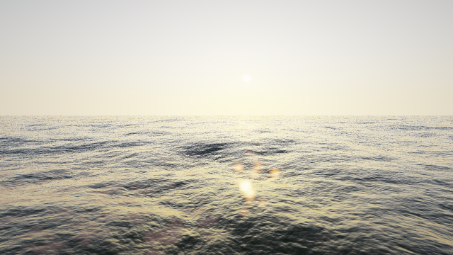
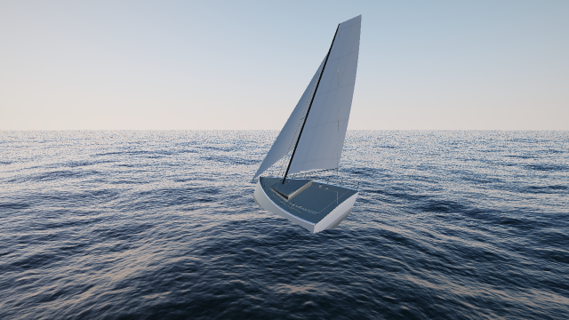
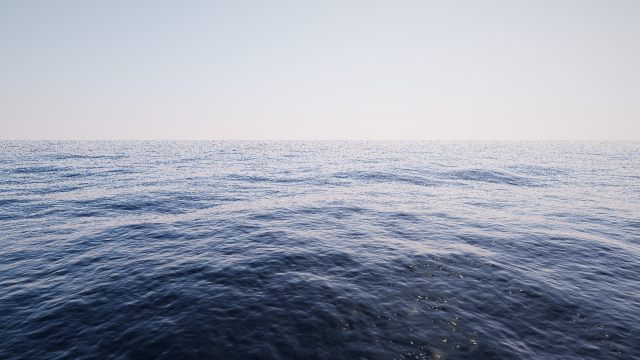
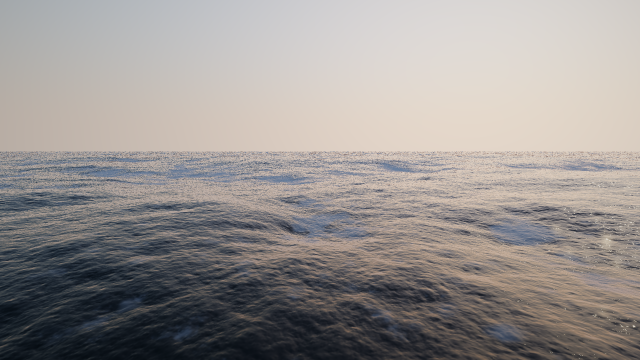
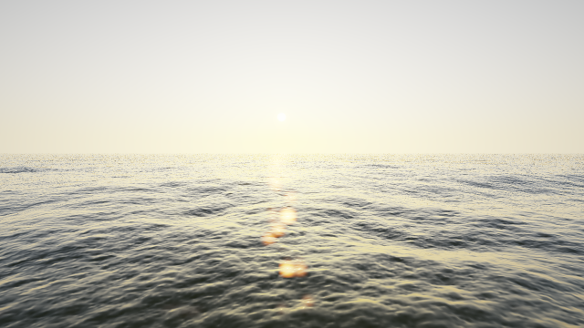
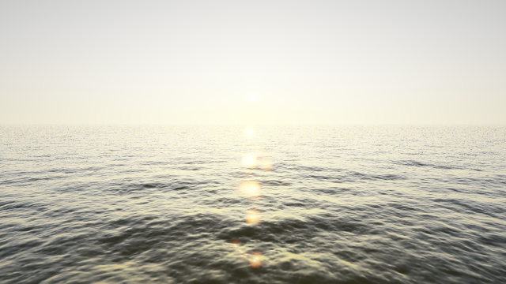

A world sailing simulator for Android. The ocean comes first.
The sea is a Tessendorf FFT surface: a JONSWAP wind sea and an independent swell train, decomposed into three cascades at 512 m, 128 m and 16 m, evolved on the GPU every frame. The sky is an analytic Preetham model, evaluated per pixel and reused for the water's reflections so sea and sky can never disagree.
Every frame below was rendered by CI on a machine with no graphics card, using Mesa's software rasteriser. They are the project's visual regression suite: if a shader change alters the ocean, these images change and the diff says so.


core — 3,200
triangles, no asset files — so the same boat appears here, on Android and
in the live preview above.



| Layer | What |
|---|---|
| Spectrum | JONSWAP with fetch relations, capped at full development; Gaussian swell; Mitsuyasu directional spreading |
| Transform | Cooley-Tukey inverse FFT from a precomputed butterfly table, four packed complex signals per cascade |
| Surface | Screen-space projected grid — no LOD rings, no seams, density that follows the screen rather than the world |
| Shading | Fresnel at IOR 1.333, analytic sky reflection, height-driven subsurface scattering, Jacobian foam broken up by Worley noise |
| Sky | Preetham, with its low-sun behaviour handled explicitly |
| Output | HDR half-float, sky-driven auto-exposure, thresholded bloom, ACES |
| Phase | Content | State |
|---|---|---|
| 0 | Multi-module build, desktop and Android launchers, CI producing an APK | done |
| 1 | The ocean: FFT cascades, sky, foam, post-processing | done, polish remaining |
| 2 | Sailing: hull on the surface, polars, apparent wind, heel, deformable sails | done, sails still rigid |
| 3 | Live weather: GFS and WaveWatch III behind a provider interface | next |
| 4 | Inshore multiplayer: 20 Hz authoritative tick, starts, wind shadow | planned |
| 5 | Offshore: world map, isochrone routing, races that survive the app closing | planned |
| 6 | The 3D workshop: paint layers, liveries, rig and foil choices | planned |
Free, in full. No purchases, no season pass, no currency, no advertising. The competitive ranking is the product, and there is nothing to sell that would not damage it. Weather comes from NOAA GFS and WaveWatch III, which are public domain, so the data stays free too.
Every push builds a debug APK and attaches it to a GitHub release. Open the releases page on the phone, download the APK, allow installation from that source once, and open it. The game runs natively at full quality.
On an iPhone that will not work, and no app can make it work: iOS refuses to execute code Apple has not signed, and an APK is a different platform's format entirely. That is why the live ocean above exists. It is the same simulation running the same shaders, in a browser, because a browser is the one way onto an iPhone that costs nothing and needs no computer. The boat there is the same boat: the same generated hull, the same polar, the same apparent-wind maths and the same 120 Hz step. CI compares a full two-minute trajectory and every vertex of the geometry between the two, so they cannot drift apart. It is still a preview, not the game: the native client remains the product.